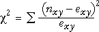

Comparison of observed and expected cell counts
The hypothesis of independence is assessed by asking whether the observed and expected cell counts are 'sufficiently close' — are the observed counts consistent with the counts that we would expect under independence?
Recruiting source and success
If the recruitment source and work performance are indeed independent, then the observed cell counts in the sample data should be similar to these expected cell counts.
| Unsatisfactory | Satisfactory | Total | |
|---|---|---|---|
| Employee referral | 167 (149.9) |
85 (102.1) |
252 |
| In-store notice | 383 (383.2) |
261 (260.8) |
644 |
| Employment agency | 33 (29.8) |
17 (20.2) |
50 |
| Media announcement | 250 (270.1) |
204 (183.9) |
454 |
| Total | 833 | 567 | 1400 |
Hypotheses
Did a sample contingency table come from a population in which the categorical row and column variables, X and Y, are independent? This question can be formalised as the hypothesis test,
H0 : X and Y are independent
HA : X and Y are dependent
Possible test statistic
In order to assess whether the data are consistent with the null hypothesis, we ask whether the observed cell counts in the contingency table, nxy, are similar to the expected cell counts based on independence, exy. The simplest measure of their dissimilarity is the sum of squares of the differences,

Small values of this statistic are expected when there is independence in the underlying population. However it does not behave entirely as desired. To be useful, a test statistic must have a known distribution when H0 is true and, ideally, this distribution should not depend too much on specific characteristics of the problem.
A better test statistic
The raw sum of squares is a poor way to assess whether a contingency table has been sampled from a population with independence. A better statistic is χ2 (pronounced chi-squared), defined by

This more fairly assesses differences between nxy and exy when the exy vary in magnitude. Its distribution still depends on the number of rows and columns in the contingency table, but is no longer affected by either the number of individuals (the total count for the table) or the margins of the table.
Only the number of rows and number of columns in the table have much influence on the distribution of χ2.
Simulation
The diagram below again samples from two independent categorical variables.
Click Accumulate then take several samples to build up the distribution of the χ2 statistic.
Now increase the sample size and repeat. Observe that χ2 is approximately the same magnitude (usually between 0.5 and 15.0) regardless of the sample size.
Finally, use the pop-up menu labelled Model to change the model to one where the marginal probabilities for the two categorical variables are unequal (but there is still independence). Observe that the distribution of χ2 remains approximately the same.